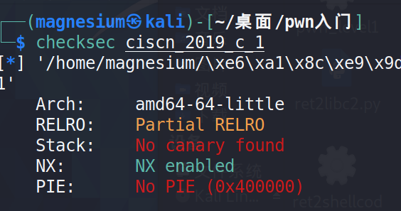
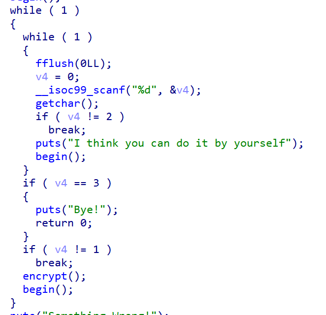
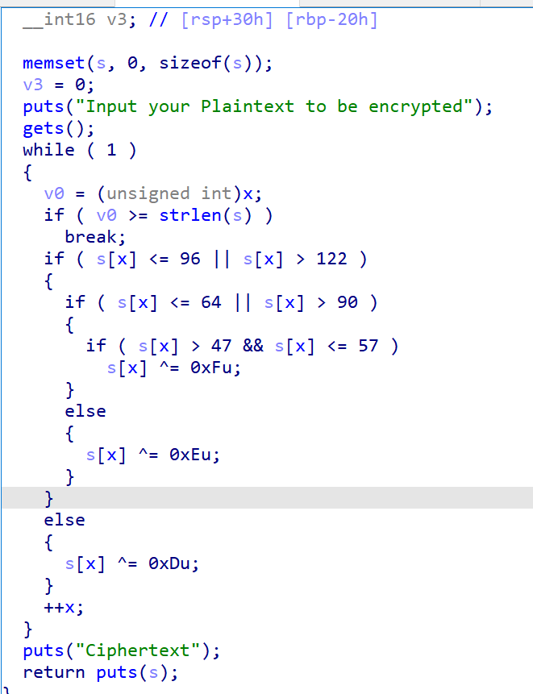
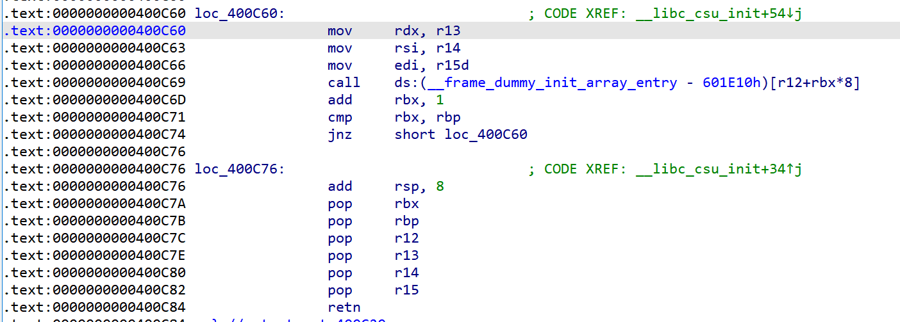
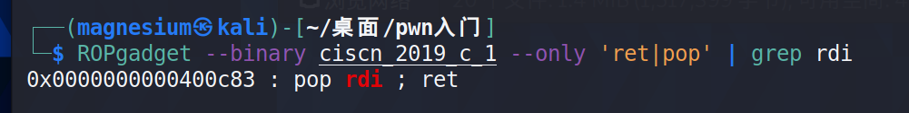
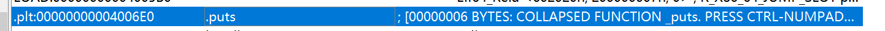

ciscn_2019_c_1
大概有一周这样没做题了，这周主要在学习基础一点的理论，学校课业也慢慢变多了（特别是程序设计作业，杀了我吧），挤了一点时间读wiki的ROP部分，被有bug和文不对题的题目折磨了好些时间，里面有些概念也需要另外找资料补充，就看得贼慢，一个下午才搞懂一两个知识点，不过总归还是有收获的，慢慢来就都能学会的orz。
然后wiki上的题直接复现感觉有很多疑点，包括一些偏移地址的知识和脚本的一些功能都搞不太清楚，就还是先上buuctf做下题。
先checksec嘛，是64位的！

然后就康康ida

显然，输入1进入encrypt函数，然后就能在里面发现一个gets（），这里会将输入的payload加密，注意到v0，可以在payload的开头放一个\0，就能绕过加密。网上也有wp说经过两次异或就能变回原数据，但是明显\0更加省心。

这里我用cyclic计算偏移地址的时候，奇怪地报错了（关于一报错就手无足措这件事），就通过s【rsp+0h】【rbp-50h】算出偏移量应该是50*16+8=88，第一个字符应该是\0，那么填充的垃圾数据应该是87个。接下来因为没有system和/bin/sh，就得用ret2libc，又因为是64位程序，参数储存在寄存器中，就应该找到gadget，这里用的是ret2csu。

这里先调用一次loc_400c76，再调用一次loc_400c60，就能先依次pop，使rdx=r13，rsi=r14，edi=r15d（只有低位8字节噢），然后会call[r12+rbx*8]这个地址指向的函数地址，因此要让这个地址不指向任一个地址，才能跳转到后面，cmp rbx,rbp，因此要让rbx=rbp也就是pop的时候让rbp=rbx+1，紧接再次把需要的数据pop进寄存器里，就能实现存储参数进寄存器，就能顺利调用需要的函数。
……
以上是第一条思路，紧接着就想到了明明可以直接使用ROPgadget =-=我人傻了
然后就找一下
64位程序中，当参数少于7个时， 参数从左到右放入寄存器: rdi, rsi, rdx, rcx, r8, r9。
当参数为7个以上时， 前 6 个与前面一样， 但后面的依次从 “右向左” 放入栈中，即和32位汇编一样。
puts只有一个参数，就找rdi就行，比起csu直接难度跳水orz

接着是找puts的plt地址，泄露got地址找到匹配的libc版本，然后就能通过libc找到system和/bin/sh，ida就能找到

那么就能写exp啦
1 | |
关于这一题的一些小插曲，其实这一题包括前面其实我已经看了蛮多的ret2libc题目了，在hgame的时候是搜别人的wp的时候第一次搜到这个题型，也仿照别人的wp来写，但是无论如何都无法写对，在hgame的时候心理各方面压力也有点大，也不敢花太多时间深究，hgame结束后的三月份，重新一点一点地去看wiki学习，重新学到这部分才有了比较好的理解，但是wiki上提供的题目似乎是有问题的，返回的地址跟我找别人的wp的地址并不一样，直到做到这个题，我自己写的程序仍然没办法得出正确结果时，我使用了别人的exp来运行仍然报错，我才发现是我的libcsearcher安装得有问题，为此甚至花费了挺长的时间，libcsearcher安装也巨慢，关于这个事情，只能说是解决问题的经验还不够多orz，大概也有一种害怕遇到问题的心理存在，不过只要有进步就是好的，之后要更有解决问题的勇气才行。
本博客所有文章除特别声明外，均采用 CC BY-SA 4.0 协议 ，转载请注明出处！